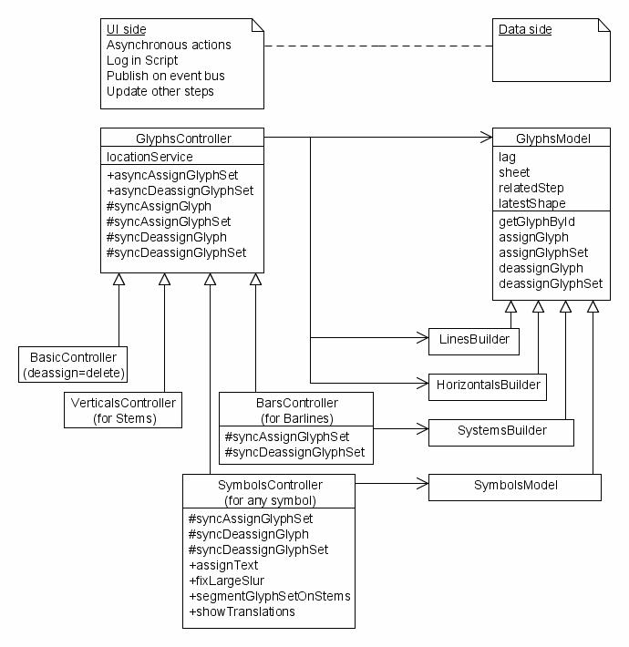

Package dedicated to all user interfaces that deal with glyphs.
There are only a few top-level classes, each one using dedicated
companion classes:
-
GlyphBoard, a general glyph board
used by all steps dealing with glyphs
-
-
GlyphLagView, a general view of
a GlyphLag, used by steps dealing with glyphs
-
GlyphRepository, the unique
access to recorded glyphs descriptions
-
GlyphTrainer, a comprehensive
user interface to train and validate the neural network
evaluator
-
-
NetworkPanel, the panel
dedicated to training the neural network evaluator
-
SelectionPanel, the
user interface to select glyph population out of the
repository
-
TrainingPanel, a
general panel for evaluator training, subclassed by
NetworkPanel
-
ValidationPanel, the
user interface to validate the evaluator against a
glyph population
-
GlyphVerifier, a user
interface dedicated to visual verification of recorded glyphs
and their assigned shape
-
-
GlyphBrowser, a user
panel to navigate through the selected glyphs
-
ShapeColorChooser, the
user interface to assign a default color to a shape, or a range
of shapes
-
SymbolsEditor The glyph user
interface for dealing with glyphs in sheets
-
Glyph Controller and Model:
